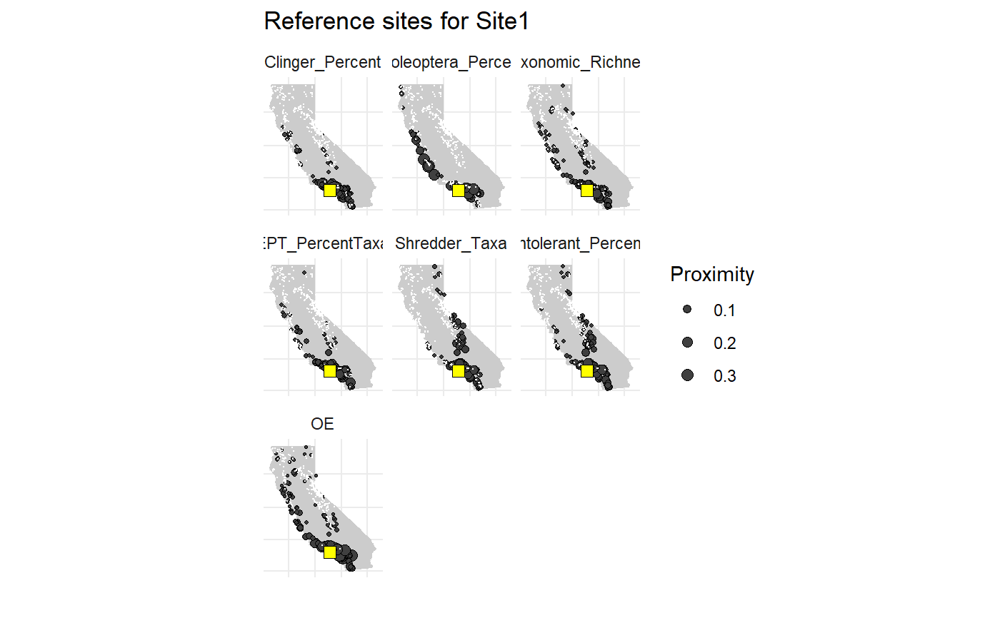

refprox.RdPlot reference proximity values for a test site
refprox(station_dat, output = c("map", "mapmod", "jit", "jitmod", "pca", "pcamod", "dat"))
| station_dat | input |
|---|---|
| output | chr string indicating desired output from the function |
A plot of average proximity values across all metrics if output = "map", a facetted map for each
model and predictor of proximity values if output = "mapmod", a jitter plot of the distribution
of proximity values by predictor if output = "jit", a faceted jitter plot of the disributin of
proximity valuues by predictor and model if output = "jitmod", a PCA plot of principal components
one and two for all metric proximity values if output = "pca", a faceted PCA plot of principal
components one and two for all metric proximity values by model if output = "pcamod", or a
data.frame of the proximity values for all reference sites and the test site if output = "dat".
station_dat must have the same GIS predictors as those in bugs_stations[[2]], specifically
"StationCode", "AREA_SQKM", "New_Lat", "New_Long", "SITE_ELEV", "PPT_00_09", "TEMP_00_09", "SumAve_P",
"KFCT_AVE", "BDH_AVE", "P_MEAN", "ELEV_RANGE". The StationCode must also not be a reference site, as
in those in loadRefData().
station_dat <- bugs_stations[[2]][1, ] # map, default refprox(station_dat)# map by model refprox(station_dat, output = 'mapmod')# jitter refprox(station_dat, output = 'jit')# jitter by model refprox(station_dat, output = 'jitmod')#># pca refprox(station_dat, output = 'pca')# pca by model refprox(station_dat, output = 'pcamod')#>#> StationCode New_Lat New_Long AREA_SQKM SITE_ELEV PPT_00_09 TEMP_00_09 #> 1 103FS0405 41.78890 -124.0778 4.610277 37.22 194059.0 1694.2 #> 2 103WER026 41.84999 -124.0332 1.509665 235.30 205588.6 1681.4 #> 3 103WER029 41.80977 -124.1121 4.733672 46.30 190371.4 1651.6 #> 4 105CE0149 41.48313 -123.7438 52.585223 651.78 210743.2 1860.7 #> 5 105CE0329 41.30818 -123.0339 4.006708 1091.57 116298.5 1722.7 #> 6 105FS0415 41.61202 -123.2923 9.580132 948.78 167678.6 1678.3 #> SumAve_P KFCT_AVE BDH_AVE P_MEAN ELEV_RANGE Log_P_MEAN LogWSA #> 1 7215.183 0.2110 1.3647 0.1222 441.78 -0.9128933 0.6637270 #> 2 7309.800 0.2200 1.4580 0.2658 366.70 -0.5754287 0.1788806 #> 3 6928.753 0.2110 1.3645 0.1154 238.70 -0.9377566 0.6751982 #> 4 7293.424 0.2084 1.4624 0.1398 931.22 -0.8544618 1.7208637 #> 5 5432.867 0.1558 1.5019 0.0605 1067.43 -1.2181728 0.6027877 #> 6 6315.229 0.1725 1.4709 0.2223 1128.22 -0.6530410 0.9813715 #> Clinger_Percent.prox Coleoptera_Percent.prox Taxonomic_Richness.prox #> 1 0 0.002 0 #> 2 0 0.000 0 #> 3 0 0.000 0 #> 4 0 0.000 0 #> 5 0 0.000 0 #> 6 0 0.000 0 #> EPT_PercentTaxa.prox Shredder_Taxa.prox Intolerant_Percent.prox OE.prox #> 1 0 0 0 0e+00 #> 2 0 0 0 0e+00 #> 3 0 0 0 0e+00 #> 4 0 0 0 1e-04 #> 5 0 0 0 0e+00 #> 6 0 0 0 0e+00 #> MeanProximity #> 1 0.0001666667 #> 2 0.0000000000 #> 3 0.0000000000 #> 4 0.0000500000 #> 5 0.0000000000 #> 6 0.0000000000tail(refdat)#> StationCode New_Lat New_Long AREA_SQKM SITE_ELEV PPT_00_09 TEMP_00_09 #> 582 SMC00282 32.87219 -116.6139 65.671318 1063.75 47643.9 2287.5 #> 583 SMC00476 34.24264 -118.1347 4.431259 1006.72 71683.2 2140.8 #> 584 SMC00875 34.55665 -119.3063 7.946416 1159.11 71679.6 2026.9 #> 585 SMC00911 34.50803 -119.2979 4.288345 469.84 67147.6 2319.7 #> 586 SMC01567 34.50961 -119.3837 32.293983 499.44 69390.3 2270.5 #> 587 Site1 34.04100 -118.5815 50.790433 7.37 37106.0 2156.3 #> SumAve_P KFCT_AVE BDH_AVE P_MEAN ELEV_RANGE Log_P_MEAN LogWSA #> 582 3234.1245 0.1941 1.550300 0.1612000 912.25 -0.7926080 1.8173757 #> 583 964.4667 0.2600 1.559000 0.1738000 859.28 -0.7599252 0.6465271 #> 584 445.8185 0.2930 1.545200 0.1319000 613.89 -0.8797223 0.9001713 #> 585 437.8000 0.2289 1.529600 0.1319000 905.16 -0.8797223 0.6322897 #> 586 409.0235 0.2545 1.535600 0.1319000 1243.56 -0.8797223 1.5091216 #> 587 339.8097 0.3186 1.547467 0.1416667 770.00 -0.8487017 1.7057819 #> Clinger_Percent.prox Coleoptera_Percent.prox Taxonomic_Richness.prox #> 582 0.050 0.00 0.008 #> 583 0.344 0.01 0.048 #> 584 0.168 0.00 0.062 #> 585 0.042 0.00 0.018 #> 586 0.010 0.00 0.002 #> 587 1.000 1.00 1.000 #> EPT_PercentTaxa.prox Shredder_Taxa.prox Intolerant_Percent.prox OE.prox #> 582 0.020 0.016 0.048 0.0205 #> 583 0.046 0.010 0.048 0.0070 #> 584 0.006 0.000 0.000 0.0000 #> 585 0.002 0.002 0.000 0.0575 #> 586 0.006 0.010 0.016 0.1270 #> 587 1.000 1.000 1.000 1.0000 #> MeanProximity #> 582 0.02208333 #> 583 0.04566667 #> 584 0.01966667 #> 585 0.03408333 #> 586 0.06716667 #> 587 1.00000000